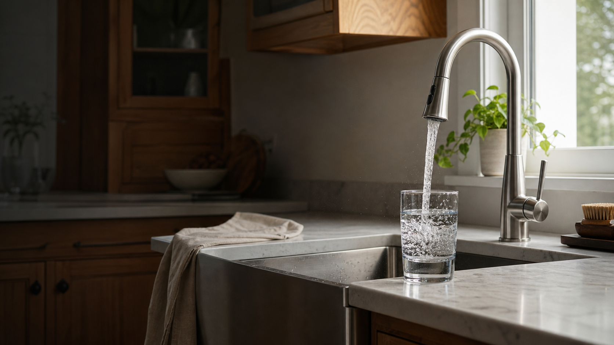
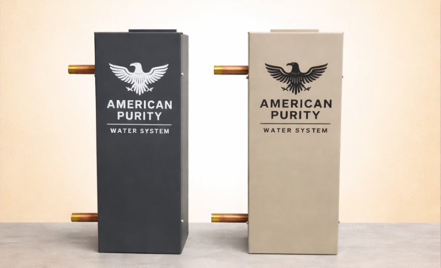

Bad taste or odor
Chlorine taste, chemical smells, sulfur odor, or generally unpleasant water can signal an issue worth addressing.

Whole-home water filtration
Improve the water your family drinks, cooks with, bathes in, and washes with every day.
Cleaner water throughout the house
Whole-home filtration treats water as it enters your home, delivering cleaner water to the kitchen sink, showers, bathrooms, laundry room, and everywhere in between.
Serving Chattanooga and nearby Tennessee communities, with regional coverage into Northwest Georgia and Northeast Alabama.
Talk with a home specialistSigns your water needs help
If your water tastes off, smells bad, leaves stains, or makes everyday life harder, it may be time to consider filtration.
Chlorine taste, chemical smells, sulfur odor, or generally unpleasant water can signal an issue worth addressing.
Orange, brown, or yellow staining can point to water conditions affecting sinks, tubs, toilets, and fixtures.
Visible buildup on faucets, cloudy glassware, spotted dishes, and dull laundry can all be signs of poor water quality.
Odor, sediment, staining, and other well-water issues call for a filtration setup matched to the home and water source.
Why One World

Treating water at the point it enters the home improves water in the kitchen, bathrooms, showers, and laundry.
Filtration can help address unpleasant tastes and odors so drinking and cooking water is more enjoyable.
Better water reaches beyond drinking—it can improve showering, bathing, laundry, cleaning, and fixture care.
The systems are designed for lasting, practical filtration without constant upkeep.
Simple by design
Start with your water source and the taste, odor, staining, sediment, or residue you’re noticing.
Get a whole-home filtration recommendation matched to your home, water source, and goals.
After professional installation, cleaner, better-smelling, better-tasting water reaches every tap.
See the difference
Cleaner water is something you can see, smell, and taste—and benefit from throughout the entire home.
Common questions
No. The focus is whole-home water filtration, not water softeners.
Water is treated as it enters your home, before it reaches the kitchen, bathrooms, showers, laundry room, and other fixtures.
Depending on the water source and local conditions, filtration may help with bad taste, chlorine smell, sulfur odor, staining, sediment, and overall water-quality concerns.
No. Whole-home filtration also affects the water used for cooking, bathing, showering, laundry, cleaning, and everyday fixture use.
Proudly serving homeowners throughout Chattanooga, Signal Mountain, Soddy-Daisy, Hixson, Northwest Georgia, and Northeast Alabama.
Free water analysis
Share what you are noticing and a home specialist will follow up about the right whole-home filtration next step.
Cleaner water starts here
Tell us what you’re noticing and get clear answers about the right filtration solution for your home.